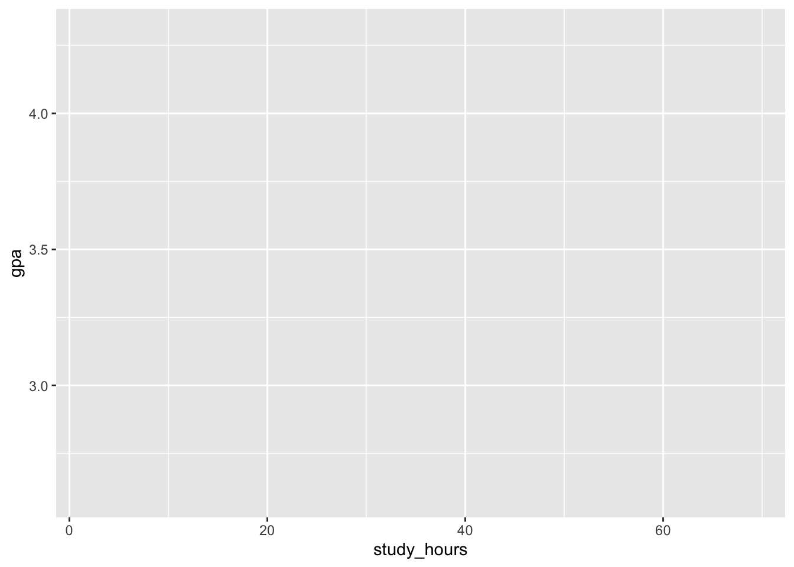
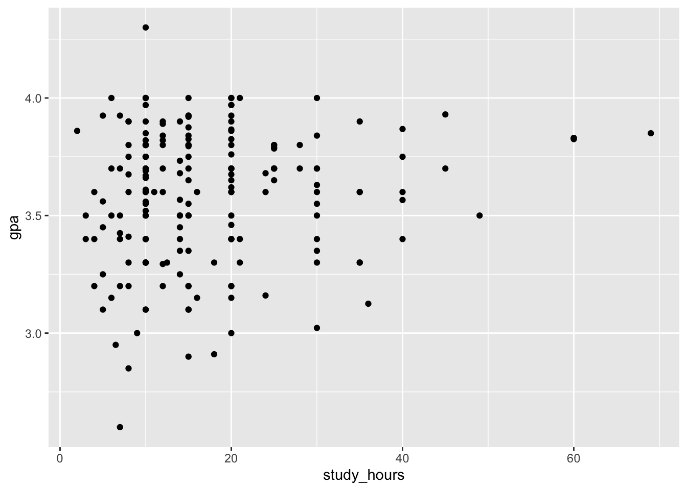

gpa_data <- read_csv("https://www.openintro.org/data/csv/gpa_study_hours.csv")Getting started with R
Setting up your coding Environment
We will be applying the statistical concepts we learn in this class using the programming language R.
I will be using RStudio Desktop during class demonstrations.
Alternatively (if you are unable to download and install software in your computer), you can use Posit Cloud
If you need help with using RStudio or Posit cloud follow these instructions
Working within Projects
We will always be working with projects in this class for several reasons:
- It makes your statistical analysis reproducible – meaning, your tables and plots will come directly from your data. If your data changes, you can just render your report again (instead of having to click on a bunch of buttons and trying to remember which order you click on which button)
- It makes it easier to organized your data, and to keep your original data un-altered (we never change our original data)
- It allows a report to be run in any computer, instead of running just on your machine (we will be using relative paths to ensure that’s the case)
Creating an R file
We will start by writing a .R file where we will type in our code, and run the script for our data analysis.
These instructions work for both RStudio desktop and Posit Cloud (the IDE is the same):
- On the top menu, click on
Filethen selectNew FileandR Script - That will open a file on the top left panel called
Untitled1 - Go to
Fileand then click onSaveto save the.Rfile – named iffirst.R
Packages
There are a number of packages for statistics in R.
We will be using tidyverse – which widely used in industry and research.
- In your
first.Rdocument typelibrary(tidyverse)and save the document. - The IDE will prompt you to install
tidyverse– click on.install. - You can also run
install.packages("tydverse")in the console (lower left panel).
Video Demonstration – Part 1
Reading data in R
Let’s start with a data file that contains two numeric variables – GPA vs. Study Hours.
You should be familiar with this data set, since we discussed it in class.
In your first.R document type the following:
Note a few things:
- We are using the
read_csvfunction to load our data because the data file we are reading in is a comma separated value text file - We are reading the file directly from a web address
- After reading the file, R will assign a name to the data – in this case the name is
gpa_data. You can name your data frame (what we call the data that has been loaded into R) anything you want, but you should choose meaningful names.
We will often save the data file to our computer first, and then read the data in from the file you have in our project. That way if the file does not exist anymore at that web address, you can still used.
Here’s how we go about doing that:
- Create a new folder in your project called
data– you can do that by clicking on theNew Foldericon at the top of theFilespanel - Download the data and drag and drop the
gpa_study_hours.csvfile into thedatafolder you created - Change the
read_csvfunction call in yourfirst.Rdocument to:gpa_data <- read_csv("data/gpa_study_hours.csv")
Video Demonstration – Part 2
Summary Statistics
Now that we have the data loaded in R, and we have a name for the data frame (gpa_data), let’s run some summary statistics on it.
The goal here is to answer these descriptive questions:
What is the average GPA in the data?
What is the average number of hours studied by the students in the data?
gpa_data |>
summarize(mean_gpa = mean(gpa),
mean_hours = mean(study_hours))Some things to note:
- We start with the data frame name –
gpa_dataand then we call functions on the data - The
|>operator is called apipeand we read it asand then - To read in English the code we just ran to get the mean (average) of the numeric variables
gpaandstudy_hourswe say:
start with the gpa_data and then summarize by creating two values, mean_gpa and mean_gpa – mean_gpa will have the results from calling the mean() function on the gpa column, and mean_hours will have the results from calling mean() on study_hours
What is a mean?
We calculate the mean (or average) but summing all the values we have for a numeric variable and dividing the resulting sum by the number of observations we have.
- Consider we have the following observations for a discrete numeric variable: 10, 8, 9, 10
- We sum all the four values we have: \(10 + 8 + 9 + 10 = 37\)
- Finally we divide the sum by the number of observations: \(37 / 4 = 9.25\)
- Our mean is
9.25
The mean is a measure of central tendency – we will be using two other measure of central tendency: mode and median. (more on this later)
Plotting the Data
For plotting the data, we will be using ggplot, which is part of the tidyverse package.
We will start with the data, like we did when calling the summarize function. But this time around we will call the plotting function, ggplot. We will specify the aesthetics using aes to map a variable to the x axis and another variable to the y axis.
gpa_data |>
ggplot(aes(y = gpa, x = study_hours))
Note that the axes were created with the appropriate labels, but there are no data points shown on the plot yet. That’s because we haven’t specified the geometrics – you haven’t told ggplot how to plot the data. We will do so by adding geom_point() to our code. Make sure you use the + operator. Here’s what the final code block looks like:
gpa_data |>
ggplot(aes(y = gpa, x = study_hours)) +
geom_point()
Commenting your first.R script
Here’s what your first.R should look like:
library(tidyverse)
gpa_data |>
summarize(mean_gpa = mean(gpa),
mean_hours = mean(study_hours))
gpa_data |>
ggplot(aes(y = gpa, x = study_hours)) +
geom_point()For now, we have only R code with no comments. Comments are very important, not only to other people who will be reading your script but also for yourself (your present-self and future-self).
You can add comments (meaning, words that will not be parsed as R code) to your script by using the # symbol.
Here’s what the script looks like with comments:
# load libraries
library(tidyverse)
# get the mean for gpa and study_hours
gpa_data |>
summarize(mean_gpa = mean(gpa),
mean_hours = mean(study_hours))
# create a scatter plot of study_hours and gpa
gpa_data |>
ggplot(aes(y = gpa, x = study_hours)) +
geom_point()